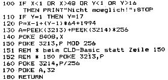

Nascom Journal |
März/April 1982 · Ausgabe 3/4 |
Bei dem CLD-DOS Betriebssytem erfolgt die Ein- und Ausgabe über externe Geräte (Bildschirm, Tastatur, Drucker usw.) durch sogenannte Devicedriver. Die Daten laufen dabei durch eine Softwareschnittstelle. Hardwareänderungen erfordern nur eine Anpassung des entsprechenden Devicedrivers. Der Vorteil liegt in der Austauschbarkeit von Programmen. Deshalb sollte man es möglichst vermeiden, Eingriffe im Kern des Betriebssystems vorzunehmen.
Die Basic-Versionen, die unter CLD-DOS laufen, sind ursprünglich für Terminals, deren Cursor mit Escape Sequenzen gesteuert wird, geschrieben worden. Beim Nascom liegt die Bildschirmsteuerung getrennt vom TT: Devicedriver im RAM ab 0C00H; das Escapezeichen (ASCII 27) löscht nur den Bildschirm.
Für manche Zwecke ist ein Scrollen des Schirms unerwünscht (z.B. Schablonen für Formulare). Hier hilft ein adressierbarer Cursor. Das kleine Basic Unterprogramm greift in zwei Bereichen in das Betriebssystem ein. In der RAM Adresse 8408 liegt der Spaltenzähler für jedes beliebige Terminal. 3213/4 ergibt die aktuelle Position des Cursors im Videoram. Der Bildschirm wird mit seinen Koordinaten so organisiert, daß X=1 und Y=1 in der linken oberen Ecke liegt.

Verkaufe Nascom 1 , 32K RAM, BASIC ZEAP 4, Toolkit, Debugger auf EPROM,
Kansas-City-Interf. VB 1000.–
Siemens T100- TTY 100 Baud, Großschr., 100 Zeichen/Zeile VB 200.–
Olivetti TE 318 ASCII- TTY 110Bd VB 600,–
H.Molle Tel. _____/____
________.__/_
____ _________
Mit diesem Beitrag und einigen im nächsten Heft erscheinenden Programmbeispielen soll diese Reihe zunächst einmal beendet werden. Um den Gebrauch des Systems zu erleichtern, habe ich ein ausführliches Verzeichnis aller verfügbaren Funktionen zusammengestellt. Dazu einige Hinweise:
In der Spalte „Parameter“ sind die Eingangsdaten verzeichnet, die eine Routine auf dem Stack vorfinden muß, und zwar von links nach rechts in der Reihenfolge, wie sie (vom Benutzer oder von einer vorangehenden Routine) auf den Stack gegeben werden müssen. Die Reihenfolge auf dem Stack ist dann natürlich genau umgekehrt, d.h. der am weitesten rechts stehende Wert liegt oben auf dem Stack. Die Spalte Lit.(erale) Arg.(umente) ist deshalb nötig, weil in FORTH die UPN nicht vollständig durchgehalten wird. Werden als Argumente einer Funktion „Worte“, z.B. Funktionsnamen, gebraucht, so folgen diese Worte auf die Funktion. In der Spalte „Ergebnis“ sind die Parameter aufgeführt, die eine Funktion auf dem Stack hinterläßt, und zwar in der gleichen Reihenfolge wie die Eingangsdaten. Ich hoffe, daß die Kommentare ausführlich genug sind. Falls Fragen auftauchen sollten, stehe ich gerne zur Verfügung.
| Seite 3 von 52 |
|---|